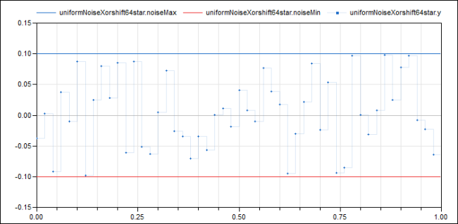

UniformNoiseXorshift64starAdd band-limited uniform noise based on a xorshift64* number generator |
|
Information
This information is part of the Modelica Standard Library maintained by the Modelica Association.
This block adds uniformly distributed noise in the range noiseMin … noiseMax to the clocked Real input signal and provides the sum as clocked Real output signal.
It is based on the xorshift64* algorithm. For more details, see the documentation to Xorshift64star.
Example
The following
example
samples zero signal with a periodic clock of 20 ms period, and adds
noise in the range from -0.1 … 0.1:
 |
 | |
| model | simulation result |
Parameters (4)
| noiseMax |
Value: 0.1 Type: Real Description: Upper limit of noise band |
|---|---|
| noiseMin |
Value: -noiseMax Type: Real Description: Lower limit of noise band |
| globalSeed |
Value: 30020 Type: Integer Description: Global seed to initialize random number generator |
| localSeed |
Value: 614657 Type: Integer Description: Local seed to initialize random number generator |
Outputs (1)
| r64 |
Type: Real Description: Random number generated with Xorshift64star |
|---|
Connectors (2)
| u |
Type: RealInput Description: Connector of clocked, Real input signal |
|
|---|---|---|
| y |
Type: RealOutput Description: Connector of clocked, Real output signal |
Used in Examples (1)
|
Modelica.Clocked.Examples.Elementary.RealSignals Example of a UniformNoiseXorshift64star block for Real signals |